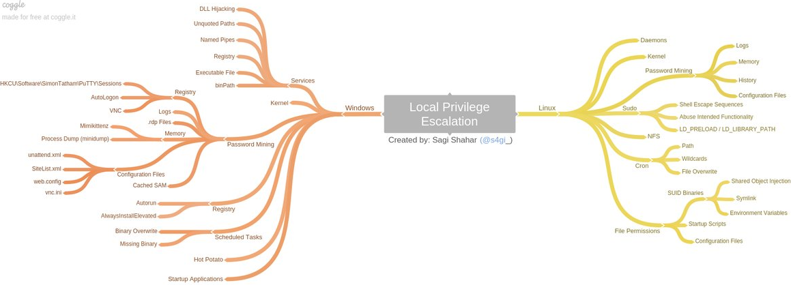

Linux: For Enumeration scripts, see Tools > Linux Local Enumeration > Auditing and Enumeration
Windows: For Enumeration scripts, see Tools > Windows Local Enumeration > Auditing and Enumeration

Linux
[Its Too Funky In Here04 Linux priv esc for fun profit and mischief Jake Willi](https://www.youtube.com/watch?v=dk2wsyFiosg)
[Understanding Systemd](https://n0where.net/understanding-systemd)
Windows
http://harmj0y.net Windows (harmj0y = Empire)
https://www.youtube.com/watch?v=kMG8IsCohHA Encyclopaedia Of Win Priv Escalation (Brett Moore)
https://web.archive.org/web/20140413142945/docstoc.com/docs/112350262/Windows-Priv-Esc
http://www.youtube.com/watch?v=_8xJaaQlpBo DerbyCon 3.0.2105 Windows Attack: AT Is The New Black
https://www.youtube.com/watch?v=PC_iMqiuIRQ Windows, Level Up! Practical Windows Priv Esc
DLL Hijacking
VB.NET Tutorial - Create a DLL / Class Library
Creating a DLL
Create a DLL with Visual Basic
Calling DLL Functions from Visual Basic Applications
DLL Injection
Reflective DLL Injection with PowerShell - clymb3r |
Delivering custom payloads with Metasploit using DLL injection - blog.cobalstrike
https://www.joachim-bauch.de/tutorials/loading-a-dll-from-memory/
http://www.harmj0y.net/blog/activedirectory/targeted-kerberoasting/ | Targeted Kerberoasting
https://conference.hitb.org/hitbsecconf2017ams/materials/D2T3%20-%20James%20Forshaw%20-%20Introduction%20to%20Logical%20Privilege%20Escalation%20on%20Windows.pdf | Very Technical
https://blog.xpnsec.com/becoming-system/
OS X
Privilege Escalation - OS X- Writeups
-
- Tools
- BigPhish
- This issue has been resolved by Apple in MacOS Sierra by enabling tty_tickets by default. NOTE: All other MacOS operation system (El Capitan, Yosemite, Mavericks etc...) still remain vulnerable to this exploit.
- osxinj
- Another dylib injector. Uses a bootstrapping module since mach_inject doesn't fully emulate library loading and crashes when loading complex modules.
- kcap
- This program simply uses screen captures and programmatically generated key and mouse events to locally and graphically man-in-the-middle an OS X password prompt to escalate privileges.
- Platypus
- Platypus is a Mac OS X developer tool that creates native Mac applications from interpreted scripts such as shell scripts or Perl, Ruby and Python programs. This is done by wrapping the script in an application bundle along with a native executable binary that runs the script.
Complete
Linux
http://www.slideshare.net/nullthreat/fund-linux-priv-esc-wprotections
http://www.irongeek.com/i.php?page=videos/bsidesaugusta2016/its-too-funky-in-here04-linux-privilege-escalation-for-fun-profit-and-all-around-mischief-jake-williams
[Reach the root](https://hackmag.com/security/reach-the-root/) | discusses a process for linux privilege exploitation
[Basic linux privilege escalation](https://blog.g0tmi1k.com/2011/08/basic-linux-privilege-escalation/) | basic linux exploitation, also covers Windows
http://insidetrust.blogspot.com/2011/04/quick-guide-to-linux-privilege.html
[Privilege escalation linux with live example](http://resources.infosecinstitute.com/privilege-escalation-linux-live-examples/) | covers a couple common PE methods in linux
[Local Linux Enumeration & Privilege Escalation Cheatsheet](https://www.rebootuser.com/?p=1623) | good resources that could be compiled into a script
https://www.rebootuser.com/?page_id=1721
http://www.rebootuser.com/?p=1758
[4 Ways get linux privilege escalation](http://www.hackingarticles.in/4-ways-get-linux-privilege-escalation/) | shows different examples of PE scripts
linux-exploit-suggester, older: https://github.com/PenturaLabs/Linux_Exploit_Suggester
linux-exploit-suggester, updated!: https://github.com/mzet-/linux-exploit-suggester
mimipenguin, mimicatz ish for linux: https://github.com/huntergregal/mimipenguin
http://netsec.ws/?p=309 <- just a link to scripts
https://github.com/sagishahar/lpeworkshop/blob/master/Lab%20Exercises%20Walkthrough%20-%20Linux.pdf
https://blog.sucuri.net/2013/05/from-a-site-compromise-to-full-root-access-symlinks-to-root-part-i.html
http://rachid.koucha.free.fr/tech_corner/shared_libs_tests.html
https://blog.compass-security.com/2012/10/dangerous-sudoer-entries-part-1-command-execution/
https://blog.compass-security.com/2012/10/dangerous-sudoers-entries-part-2-insecure-functionality/
https://blog.compass-security.com/2012/10/dangerous-sudoers-entries-part-4-wildcards/
http://0x90909090.blogspot.fr/2015/07/no-one-expect-command-execution.html
https://pen-testing.sans.org/resources/papers/gcih/attack-defend-linux-privilege-escalation-techniques-2016-152744
https://www.defensecode.com/public/DefenseCode_Unix_WildCards_Gone_Wild.txt
https://www.nccgroup.trust/us/about-us/newsroom-and-events/blog/2010/february/busybox-command-injection/
Windows
https://www.trustwave.com/Resources/SpiderLabs-Blog/My-5-Top-Ways-to-Escalate-Privileges/
[Windows Privilege Escalation](http://www.bhafsec.com/wiki/index.php/Windows_Privilege_Escalation) | collection of wiki pages covering Windows Privilege escalation
https://github.com/PowerShellMafia/PowerSploit | In tools section
https://github.com/pentestmonkey/windows-privesc-check | In tools section
https://github.com/foxglovesec/RottenPotato | In tools section
https://blog.gdssecurity.com/labs/2014/7/11/introducing-windows-exploit-suggester.html | In tools section
[Windows Privilege Escalation Fundamentals](http://www.fuzzysecurity.com/tutorials/16.html) | collection of great info/tutorials, option to contribute to the creator through patreon, creator is an OSCP (fantastic)
http://www.greyhathacker.net/?p=738 | Elevating privileges by exploiting weak folder permissions (Parvez Anwar) (fantastic)
http://www.sploitspren.com/2018-01-26-Windows-Privilege-Escalation-Guide/ (fantastic)
https://blog.netspi.com/windows-priv...or-privileges/
https://blog.netspi.com/windows-priv...in-privileges/
http://it-ovid.blogspot.com/2012/02/windows-privilege-escalation.html - Windows
www.toshellandback.com/2015/11/24/ms-priv-esc/ - Windows (fantastic)
http://www.blackhillsinfosec.com/?p=5824 | HostRecon Script information
https://pentest.blog/windows-privilege-escalation-methods-for-pentesters/ (fantastic)
https://www.commonexploits.com/unquoted-service-paths/
https://room362.com/post/2011/2011-06-27-fxsstdll-persistence-the-evil-fax-machine/
https://blog.cobaltstrike.com/2014/04/02/what-happens-when-i-type-getsystem/
https://adsecurity.org/?p=2288
http://blogs.technet.com/b/markrussinovich/archive/2006/05/01/the-power-in-power-users.aspx (Power Users group)
https://hi.cybereason.com/hubfs/Siofra-Research-Tool-Cybereason.pdf?t=1515089088070 Siofra tool In tools section
[Windows privilege escalation checker](https://github.com/netbiosX/Checklists/blob/master/Windows-Privilege-Escalation.md) | a list of topics that link to pentestlab.blog, all related to windows privilege escalation In tools section
https://pentestlab.blog/2017/03/27/dll-hijacking/
http://www.tarasco.org/
https://github.com/sagishahar/lpeworkshop/blob/master/Local%20Privilege%20Escalation%20Workshop%20-%20Slides.pdf (fantastic)
Net.exe reference
Dsquery - technet
Get Active Window on User Desktop - technet This script will tell you the application that user is currently using. This also called active window. This script replies on unmanaged dll, user32.dll, to get this information. It has a function called GetForegroundWindow() which returns the Windowhandle of the active process.
Get-Window Gets the application windows that are open on the local desktop.
Get Active Window titles of remote computer? - reddit
How to get list of running applications using PowerShell or VBScript
Introduction to WMI Basics with PowerShell Part 1 (What it is and exploring it with a GUI) (In UsefulCommands primer)
Playing with MOF files on Windows, for fun & profit
https://github.com/gdedrouas/Exchange-AD-Privesc
https://byt3bl33d3r.github.io/practical-guide-to-ntlm-relaying-in-2017-aka-getting-a-foothold-in-under-5-minutes.html
https://www.fox-it.com/en/insights/blogs/blog/inside-windows-network/
https://hausec.com/2017/10/25/automating-the-pentesting-process-how-llmnr-spoofing-can-lead-to-domain-admin-in-5-minutes/
https://blog.fox-it.com/2018/04/26/escalating-privileges-with-acls-in-active-directory/
“I Hunt Sys Admins” - Harmjoy
https://www.slideshare.net/harmj0y/i-hunt-sys-admins
https://winscripting.blog/2017/05/12/first-entry-welcome-and-uac-bypass/
https://tyranidslair.blogspot.co.uk/2017/08/the-art-of-becoming-trustedinstaller.html
Dynamic-Link Library Search Order |
Manifests - MSDN |
DLL Side-Loading: Another Blind-Spot for Anti-Virus - FireEye |
DLL Side-Loading: A Thorn in the Side of the Anti-Virus Industry - pdf |
DLL Side Loading - veramine detections |
Secure loading of libraries to prevent DLL preloading attacks - MSDN |
Dynamic-Link Library Hijacking | archive |
Crash Course in DLL Hijacking |
DLL Injection and Hooking |
Windows DLL Injection Basics |
Crash Course in DLL Hijacking |
An Improved Reflective DLL Injection Technique - Dan Staples |
http://securityxploded.com/ntcreatethreadex.php |
http://syprog.blogspot.com/2012/05/createremotethread-bypass-windows.html
Inject All the Things - Shutup and Hack - Code - Github | Amazing
https://github.com/stephenfewer/ReflectiveDLLInjection | The original reflective technique
https://adsecurity.org/?p=676 | ms14-068
https://www.trustedsec.com/2014/12/ms14-068-full-compromise-step-step/ | ms14-068
http://adsecurity.org/?p=525 | ms14-068
http://adsecurity.org/?p=541 | ms14-068
http://adsecurity.org/?p=763 | ms14-068
http://carnal0wnage.attackresearch.com/2012/10/group-policy-preferences-and-getting.html | GPP-Passwords
https://web.archive.org/web/20160413141758/leonteale.co.uk/decrypting-windows-2008-gpp-user-passwords-using-gpprefdecrypt-py/ | Archive. GPP-Passwords
http://www.labofapenetrationtester.com/2015/05/dumping-passwords-in-plain-on-windows-8-1.html | WDigest registry
https://blog.ensilo.com/atombombing-brand-new-code-injection-for-windows | DLL AtomBombing injection
https://blog.ensilo.com/atombombing-brand-new-code-injection-for-windows
https://github.com/BreakingMalwareResearch/atom-bombing
https://adsecurity.org/?p=2362 | amazing information about gaining domain admin, routes to escalation, etc
https://sec-consult.com/en/blog/2018/06/pentesters-windows-ntfs-tricks-collection/
https://github.com/l0ss/Get-GPTrashfire/ | Group Policy Escalation Stuff
http://blakhal0.blogspot.com/2012/08/hiding-files-by-exploiting-spaces-in.html
https://labs.mwrinfosecurity.com/blog/trust-years-to-earn-seconds-to-break/ | S4U2Self and Kerberos
https://www.slideshare.net/mubix/windows-attacks-at-is-the-new-black-26665607 | Various